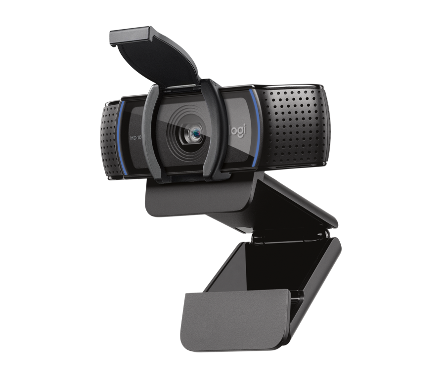
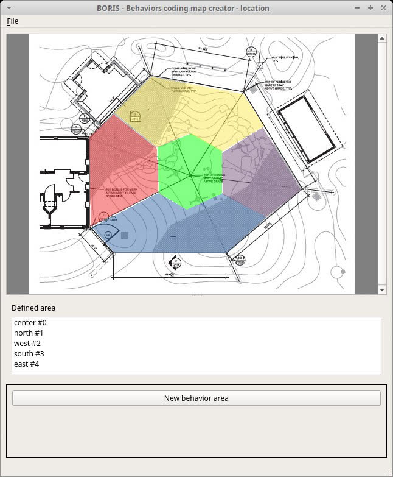

Path · wait · hesitation
Count movement, not identity.One camera + one question
Behavior shows where.
EMA helps explain why.
Stress · ease · welcome
A brief QR-based EMA at the touchpoint.Layout · sign · staff
Redesign the system, then measure again.Minimum field kit
Small enough for a class.
Real enough for an event.

Example device
Product image/specification: LogitechLogitech C920s—or equivalent.
A basic fixed-view webcam is sufficient for one indoor entrance zone. Mount it high and angle it downward so the study captures movement rather than faces.
- 1080p · 30 fps
- 78° fixed field of view
- USB laptop connection
- 1.5–2 m tripod / clamp
- USB extension + floor tape

Free software
Interface image: BORIS official screenshotsBORIS.
Students define the behaviors first, then log when they happen while reviewing video. No programming is required for the core exercise.
- Mark observation zones
- Code wait start / stop
- Log hesitation and wrong turns
- Export events to CSV
- Windows · macOS · Linux
Simple software
Use the institution's approved survey and data-retention protocol.Qualtrics—or a campus-approved form.
Place the QR prompt immediately after the observed zone. Keep it brief so the answer refers to the same moment recorded by the camera.
- Stress · 1–7
- Ease · 1–7
- Welcome · 1–7
- Timestamp for matching
- No name required
Learn by doing
A four-part class experiment.
Minimum setup: phone or webcam, tripod, BORIS, spreadsheet, and QR survey.
Research boundary: no facial identification; obtain consent or use an approved observation protocol, minimize retention, and report aggregate behavior.